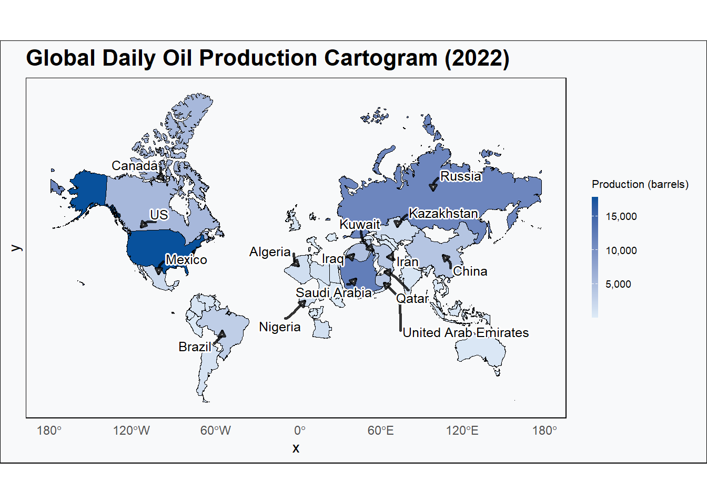
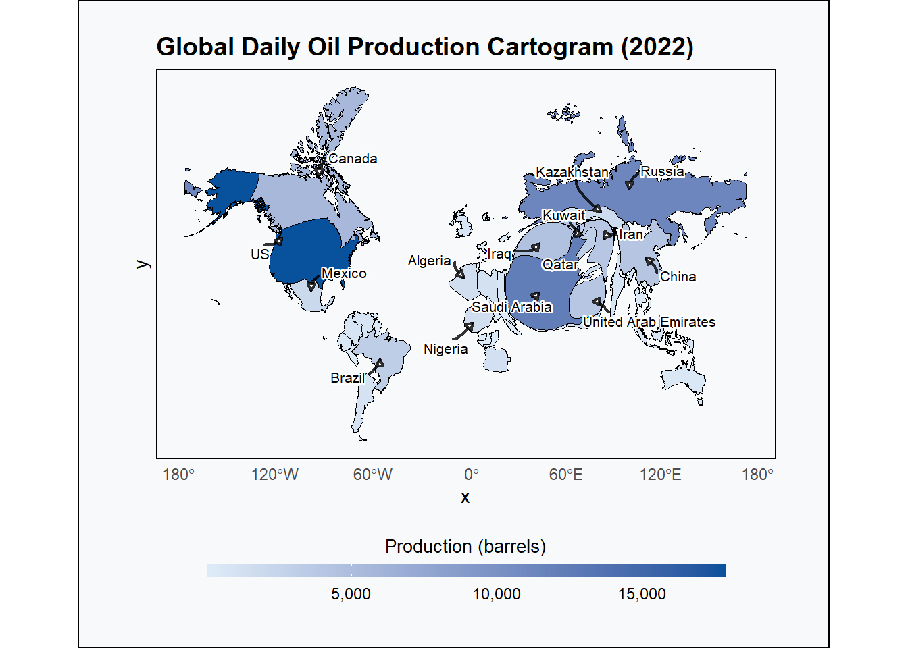
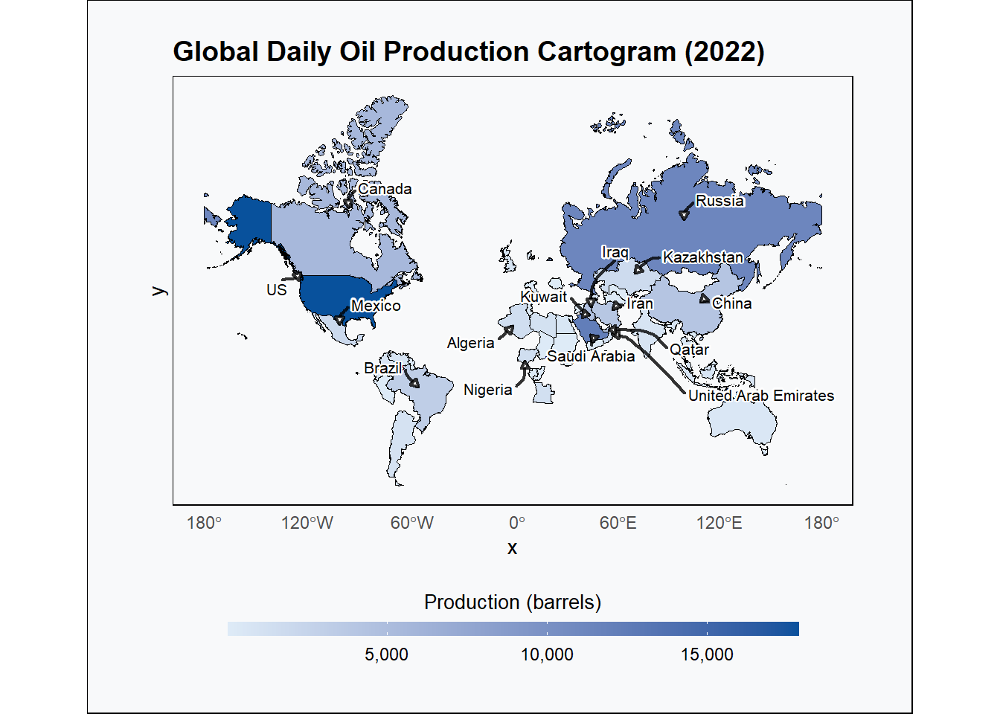
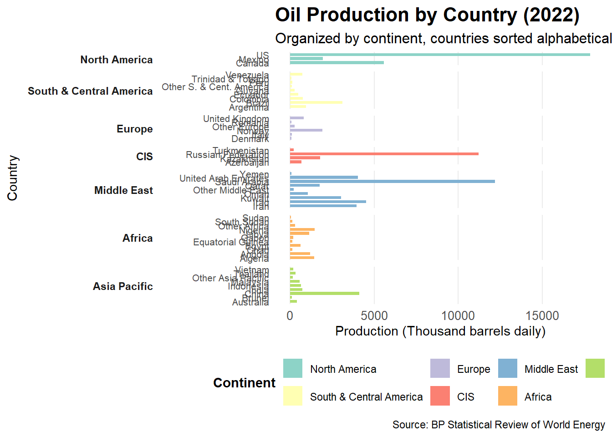

# A tibble: 50 × 3
`Country/Region` Production_2022 iso_a3
<chr> <dbl> <chr>
1 Canada 5575. CAN
2 Mexico 1943. MEX
3 US 17844. USA
4 Argentina 955. ARG
5 Brazil 3112. BRA
6 Colombia 754. COL
7 Ecuador 481. ECU
8 Guyana 278. GUY
9 Peru 128. PER
10 Trinidad & Tobago 73.9 TTO
# ℹ 40 more rows
Visualisation
This is Visualization 1 which incorporates a cartogram with legend on the right side
# Loading a base world mapworld <- rnaturalearth::ne_countries(scale ="medium", returnclass ="sf")# Merging the world map with the oil production dataworld_data <-left_join(world, df_clean, by =c("iso_a3"="iso_a3"))# Transform to a projected coordinate reference system (CRS). In this case, we use the Mercator projection.world_data_proj <-st_transform(world_data, crs =3857) %>%filter(!is.na(Production_2022))# Create continuous area cartogram weighted by Production_2022carto <-cartogram_cont(world_data_proj, weight ="Production_2022", itermax =2)# Calculate centroids for label placement and area for font sizingcentroids <-suppressWarnings( carto %>%st_centroid() %>%mutate(visible_area =st_area(geometry) %>%as.numeric(),font_size = scales::rescale(visible_area, to =c(2.5, 4)) # adjust scale as needed ))# Extract coordinates from centroids centroids_coords <- centroids %>%mutate(x =st_coordinates(geometry)[,1],y =st_coordinates(geometry)[,2] )# Show the top 15 countries by oil production for labelingtop_labels <- centroids_coords %>%mutate(`Country/Region`=ifelse(`Country/Region`=="Russian Federation", "Russia", `Country/Region`)) %>%slice_max(order_by = Production_2022, n =15)ggplot(carto) +geom_sf(aes(fill = Production_2022), color ="black", linewidth =0.1) +geom_text_repel(data = top_labels,aes(x = x, y = y, label =`Country/Region`, size = font_size),color ="black",segment.color ="black",segment.size =0.9,segment.alpha =0.8,segment.curvature =0.1,segment.angle =20, arrow =arrow(length =unit(0.15, "cm"), type ="closed"),force =1.5,box.padding =0.6,point.padding =0.4,min.segment.length =unit(0.2, "lines"), # <- avoid near-zero segmentsmax.overlaps =15,bg.color ="white", bg.r =0.15 ) +scale_size_identity() +scale_fill_gradient(low ="#deebf7", high ="#08519c",name ="Production (barrels)",labels = scales::comma ) +guides(fill =guide_colorbar(barwidth =0.3, # Slim colorbarbarheight =6# Taller bar to preserve readability )) +theme_minimal(base_family ="sans") +theme(plot.title =element_text(size =16, face ="bold"),panel.grid =element_blank(),panel.background =element_rect(fill ="#f8f9fa"),plot.background =element_rect(fill ="#f8f9fa"),# Legend layout on the right but compactlegend.position ="right",legend.title =element_text(size =8),legend.text =element_text(size =7),legend.key.size =unit(0.3, "cm"),legend.spacing =unit(0.2, "cm"),legend.box.margin =margin(0, 2, 0, 2) ) +labs(title ="Global Daily Oil Production Cartogram (2022)")

This is Visualization 2 which incorporates a cartogram with legend on the bottom
# Loading a base world mapworld <- rnaturalearth::ne_countries(scale ="medium", returnclass ="sf")# Merging the world map with the oil production dataworld_data <-left_join(world, df_clean, by =c("iso_a3"="iso_a3"))# Transform to a projected coordinate reference system (CRS). In this case, we use the Mercator projection.world_data_proj <-st_transform(world_data, crs =3857) %>%filter(!is.na(Production_2022))# Create continuous area cartogram weighted by Production_2022carto <-cartogram_cont(world_data_proj, weight ="Production_2022", itermax =5)# Calculate centroids for label placement and area for font sizingcentroids <-suppressWarnings( carto %>%st_centroid() %>%mutate(visible_area =st_area(geometry) %>%as.numeric(),font_size = scales::rescale(visible_area, to =c(1.5, 4)) # adjust scale as needed ))# Extract coordinates from centroids centroids_coords <- centroids %>%mutate(x =st_coordinates(geometry)[,1],y =st_coordinates(geometry)[,2] )# Show the top 15 countries by oil production for labelingtop_labels <- centroids_coords %>%mutate(`Country/Region`=ifelse(`Country/Region`=="Russian Federation", "Russia", `Country/Region`)) %>%slice_max(order_by = Production_2022, n =15)ggplot(carto) +geom_sf(aes(fill = Production_2022), color ="black", linewidth =0.1) +geom_text_repel(data = top_labels,aes(x = x, y = y, label =`Country/Region`, size = font_size),color ="black",segment.color ="black",segment.alpha =0.8,segment.curvature =0.1,segment.angle =20,arrow =arrow(length =unit(0.15, "cm"), type ="closed"),force =2, # Push labels away furtherbox.padding =0.6,point.padding =0.4,min.segment.length =unit(0.2, "lines"), # Prevent zero-length segmentsmax.overlaps =15,segment.size =0.75,bg.color ="white", bg.r =0.15 ) +scale_size_identity() +scale_fill_gradient(low ="#deebf7", high ="#08519c",name ="Production (barrels)",labels = scales::comma ) +guides(fill =guide_colorbar(title.position ="top",barwidth =unit(20, "lines"), # widerbarheight =unit(0.5, "lines"), # flattertitle.hjust =0.5)) +theme_minimal(base_family ="sans") +theme(plot.title =element_text(size =14, face ="bold"),panel.grid =element_blank(),panel.background =element_rect(fill ="#f8f9fa"),plot.background =element_rect(fill ="#f8f9fa"),legend.title =element_text(size =10),legend.text =element_text(size =9),legend.key.size =unit(0.3, "cm"),legend.position ="bottom",plot.margin =margin(20, 30, 20, 30)) +labs(title ="Global Daily Oil Production Cartogram (2022)")

This is visualisation 3 without the distortion from the Oil Production value
# Loading a base world mapworld <- rnaturalearth::ne_countries(scale ="medium", returnclass ="sf")# Merging the world map with the oil production dataworld_data <-left_join(world, df_clean, by =c("iso_a3"="iso_a3"))# Transform to a projected coordinate reference system (CRS). In this case, we use the Mercator projection.world_data_proj <-st_transform(world_data, crs =3857) %>%filter(!is.na(Production_2022))# Create continuous area cartogram weighted by Production_2022carto <- world_data_proj# Calculate centroids for label placement and area for font sizingcentroids <-suppressWarnings( carto %>%st_centroid() %>%mutate(visible_area =st_area(geometry) %>%as.numeric(),font_size = scales::rescale(visible_area, to =c(1.5, 4)) # adjust scale as needed ))# Extract coordinates from centroids centroids_coords <- centroids %>%mutate(x =st_coordinates(geometry)[,1],y =st_coordinates(geometry)[,2] )# Show the top 15 countries by oil production for labelingtop_labels <- centroids_coords %>%mutate(`Country/Region`=ifelse(`Country/Region`=="Russian Federation", "Russia", `Country/Region`)) %>%slice_max(order_by = Production_2022, n =15)ggplot(carto) +geom_sf(aes(fill = Production_2022), color ="black", linewidth =0.1) +geom_text_repel(data = top_labels,aes(x = x, y = y, label =`Country/Region`, size = font_size),color ="black",segment.color ="black",segment.alpha =0.8,segment.curvature =0.1,segment.angle =20,arrow =arrow(length =unit(0.15, "cm"), type ="closed"),force =2, # Push labels away furtherbox.padding =0.6,point.padding =0.4,min.segment.length =unit(0.2, "lines"), # Prevent zero-length segmentsmax.overlaps =15,segment.size =0.75,bg.color ="white", bg.r =0.15 ) +scale_size_identity() +scale_fill_gradient(low ="#deebf7", high ="#08519c",name ="Production (barrels)",labels = scales::comma ) +guides(fill =guide_colorbar(title.position ="top",barwidth =unit(20, "lines"), # widerbarheight =unit(0.5, "lines"), # flattertitle.hjust =0.5)) +theme_minimal(base_family ="sans") +theme(plot.title =element_text(size =14, face ="bold"),panel.grid =element_blank(),panel.background =element_rect(fill ="#f8f9fa"),plot.background =element_rect(fill ="#f8f9fa"),legend.title =element_text(size =10),legend.text =element_text(size =9),legend.key.size =unit(0.3, "cm"),legend.position ="bottom",plot.margin =margin(20, 30, 20, 30)) +labs(title ="Global Daily Oil Production Cartogram (2022)")

Visualisation 4 using Horizontal Barcharts
# Load required librarieslibrary(readr)library(dplyr)library(ggplot2)library(tidyr)# Read the CSV file with better column specification# Note: You'll need to adjust the file path to match your file locationoil_data <-read_csv("Oil Production 2022.csv", skip =2, show_col_types =FALSE)
# Clean and prepare the dataoil_clean <- oil_data %>%# Rename the first column to Countryrename(Country =names(.)[1]) %>%# Select country and 2022 production data (assuming 2022 is the last or second-to-last column)select(Country, `2022`) %>%# Remove empty rows and total rowsfilter(!is.na(Country), Country !="",!grepl("^Total", Country, ignore.case =TRUE),!is.na(`2022`),`2022`!="") %>%# Convert production to numeric, handling any special charactersmutate(Production_2022 =as.numeric(gsub("[^0-9.]", "", `2022`))) %>%# Remove rows where conversion failed or production is very lowfilter(!is.na(Production_2022), Production_2022 >50) %>%select(Country, Production_2022)# Print the countries we found to verifyprint("Countries found in data:")
# Create continent mapping function based on the regional structure in your dataassign_continent <-function(country) {case_when(# North America country %in%c("Canada", "Mexico", "US") ~"North America",# South & Central America country %in%c("Argentina", "Brazil", "Colombia", "Ecuador", "Guyana", "Peru", "Trinidad & Tobago", "Venezuela", "Other S. & Cent. America") ~"South & Central America",# Europe country %in%c("Denmark", "Italy", "Norway", "Romania", "United Kingdom", "Other Europe") ~"Europe",# CIS (Former Soviet Union) country %in%c("Azerbaijan", "Kazakhstan", "Russian Federation", "Turkmenistan", "USSR", "Uzbekistan", "Other CIS") ~"CIS",# Middle East country %in%c("Iran", "Iraq", "Kuwait", "Oman", "Qatar", "Saudi Arabia", "Syria", "United Arab Emirates", "Yemen", "Other Middle East") ~"Middle East",# Africa country %in%c("Algeria", "Angola", "Chad", "Republic of Congo ", "Egypt", "Equatorial Guinea", "Gabon", "Libya", "Nigeria", "South Sudan", "Sudan", "Tunisia", "Other Africa") ~"Africa",# Asia Pacific country %in%c("Australia", "Brunei", "China", "India", "Indonesia", "Malaysia", "Thailand", "Vietnam", "Other Asia Pacific") ~"Asia Pacific",# Default for any unmatched countriesTRUE~"Other" )}# Apply continent assignmentoil_clean <- oil_clean %>%mutate(Continent =assign_continent(Country)) %>%# Remove any countries that didn't get assigned to a continentfilter(Continent !="Other")# Create final datasetoil_final <- oil_clean %>%# Sort countries alphabetically within continentsarrange(Continent, Country) %>%# Create a factor for proper ordering in the plotmutate(Continent =factor(Continent, levels =c("North America", "South & Central America", "Europe", "CIS", "Middle East", "Africa", "Asia Pacific")),Country =factor(Country, levels = Country) )# Print final dataset for verificationprint("Final dataset:")
[1] "Final dataset:"
print(oil_final)
# A tibble: 51 × 3
Country Production_2022 Continent
<fct> <dbl> <fct>
1 Algeria 1443 Africa
2 Angola 1191 Africa
3 Chad 124 Africa
4 Egypt 613 Africa
5 Equatorial Guinea 121 Africa
6 Gabon 191 Africa
7 Libya 1143 Africa
8 Nigeria 1445 Africa
9 Other Africa 284 Africa
10 South Sudan 141 Africa
# ℹ 41 more rows
# Create the horizontal bar chartp <-ggplot(oil_final, aes(x = Production_2022, y = Country, fill = Continent)) +geom_col(width =0.7) +scale_fill_brewer(type ="qual", palette ="Set3") +labs(title ="Oil Production by Country (2022)",subtitle ="Organized by continent, countries sorted alphabetically within each continent",x ="Production (Thousand barrels daily)",y ="Country",fill ="Continent",caption ="Source: BP Statistical Review of World Energy" ) +theme_minimal() +theme(plot.title =element_text(size =16, face ="bold"),plot.subtitle =element_text(size =12),axis.text.y =element_text(size =8),axis.text.x =element_text(size =10),legend.position ="bottom",legend.title =element_text(face ="bold"),panel.grid.major.y =element_blank(),panel.grid.minor =element_blank() ) +# Add continent labels on the y-axisfacet_grid(Continent ~ ., scales ="free_y", space ="free_y", switch ="y") +theme(strip.text.y.left =element_text(angle =0, hjust =1, face ="bold"),strip.placement ="outside" )# Display the plotprint(p)

# Optional: Save the plotggsave("oil_production_2022.png", plot = p, width =14, height =25, dpi =300)# Display summary statisticscat("Summary of Oil Production Data (2022):\n")
# A tibble: 7 × 4
Continent Countries Total_Production Avg_Production
<fct> <int> <dbl> <dbl>
1 Middle East 9 30802 3422.
2 North America 3 25362 8454
3 CIS 4 13845 3461.
4 Asia Pacific 9 7252 806.
5 Africa 11 6758 614.
6 South & Central America 9 6625 736.
7 Europe 6 3214 536.
Visualisation 5
# Load required librarieslibrary(readr)library(dplyr)library(ggplot2)library(tidyr)# Read the CSV file with better column specification# Note: You'll need to adjust the file path to match your file locationoil_data <-read_csv("Oil Production 2022.csv", skip =2, show_col_types =FALSE)
# Clean and prepare the dataoil_clean <- oil_data %>%# Rename the first column to Countryrename(Country =names(.)[1]) %>%# Select country and 2022 production data (assuming 2022 is the last or second-to-last column)select(Country, `2022`) %>%# Remove empty rows and total rowsfilter(!is.na(Country), Country !="",!grepl("^Total", Country, ignore.case =TRUE),!is.na(`2022`),`2022`!="") %>%# Convert production to numeric, handling any special charactersmutate(Production_2022 =as.numeric(gsub("[^0-9.]", "", `2022`))) %>%# Remove rows where conversion failed or production is very lowfilter(!is.na(Production_2022), Production_2022 >50) %>%select(Country, Production_2022)# Print the countries we found to verifyprint("Countries found in data:")
# Create continent mapping function based on the regional structure in your dataassign_continent <-function(country) {case_when(# North America country %in%c("Canada", "Mexico", "US") ~"North America",# South & Central America country %in%c("Argentina", "Brazil", "Colombia", "Ecuador", "Guyana", "Peru", "Trinidad & Tobago", "Venezuela", "Other S. & Cent. America") ~"South & Central America",# Europe country %in%c("Denmark", "Italy", "Norway", "Romania", "United Kingdom", "Other Europe") ~"Europe",# CIS (Former Soviet Union) country %in%c("Azerbaijan", "Kazakhstan", "Russian Federation", "Turkmenistan", "USSR", "Uzbekistan", "Other CIS") ~"CIS",# Middle East country %in%c("Iran", "Iraq", "Kuwait", "Oman", "Qatar", "Saudi Arabia", "Syria", "United Arab Emirates", "Yemen", "Other Middle East") ~"Middle East",# Africa country %in%c("Algeria", "Angola", "Chad", "Republic of Congo ", "Egypt", "Equatorial Guinea", "Gabon", "Libya", "Nigeria", "South Sudan", "Sudan", "Tunisia", "Other Africa") ~"Africa",# Asia Pacific country %in%c("Australia", "Brunei", "China", "India", "Indonesia", "Malaysia", "Thailand", "Vietnam", "Other Asia Pacific") ~"Asia Pacific",# Default for any unmatched countriesTRUE~"Other" )}# Apply continent assignmentoil_clean <- oil_clean %>%mutate(Continent =assign_continent(Country)) %>%# Remove any countries that didn't get assigned to a continentfilter(Continent !="Other")# Create final datasetoil_final <- oil_clean %>%# Sort countries alphabetically within continentsarrange(Continent, Country) %>%# Create a factor for proper ordering in the plotmutate(Continent =factor(Continent, levels =c("North America", "South & Central America", "Europe", "CIS", "Middle East", "Africa", "Asia Pacific")),Country =factor(Country, levels = Country) )# Print final dataset for verificationprint("Final dataset:")
[1] "Final dataset:"
print(oil_final)
# A tibble: 51 × 3
Country Production_2022 Continent
<fct> <dbl> <fct>
1 Algeria 1443 Africa
2 Angola 1191 Africa
3 Chad 124 Africa
4 Egypt 613 Africa
5 Equatorial Guinea 121 Africa
6 Gabon 191 Africa
7 Libya 1143 Africa
8 Nigeria 1445 Africa
9 Other Africa 284 Africa
10 South Sudan 141 Africa
# ℹ 41 more rows
# Create the horizontal bar chartp <-ggplot(oil_final, aes(x = Production_2022, y = Country, fill = Continent)) +geom_col(width =0.7) +scale_fill_brewer(type ="qual", palette ="Set3") +labs(title ="Oil Production by Country (2022)",subtitle ="Organized by continent, countries sorted alphabetically within each continent",x ="Production (Thousand barrels daily)",y ="Country",fill ="Continent",caption ="Source: BP Statistical Review of World Energy" ) +theme_minimal() +theme(plot.title =element_text(size =16, face ="bold"),plot.subtitle =element_text(size =12),axis.text.y =element_text(size =8),axis.text.x =element_text(size =10),legend.position ="bottom",legend.title =element_text(face ="bold"),panel.grid.major.y =element_blank(),panel.grid.minor =element_blank() ) +# Add continent labels on the y-axisfacet_grid(Continent ~ ., scales ="free_y", space ="free_y", switch ="y") +theme(strip.text.y.left =element_text(angle =0, hjust =1, face ="bold"),strip.placement ="outside" )# Display the plotprint(p)
# Optional: Save the plotggsave("oil_production_2022.png", plot = p, width =12, height =16, dpi =300)# Display summary statisticscat("Summary of Oil Production Data (2022):\n")
# A tibble: 7 × 4
Continent Countries Total_Production Avg_Production
<fct> <int> <dbl> <dbl>
1 Middle East 9 30802 3422.
2 North America 3 25362 8454
3 CIS 4 13845 3461.
4 Asia Pacific 9 7252 806.
5 Africa 11 6758 614.
6 South & Central America 9 6625 736.
7 Europe 6 3214 536.